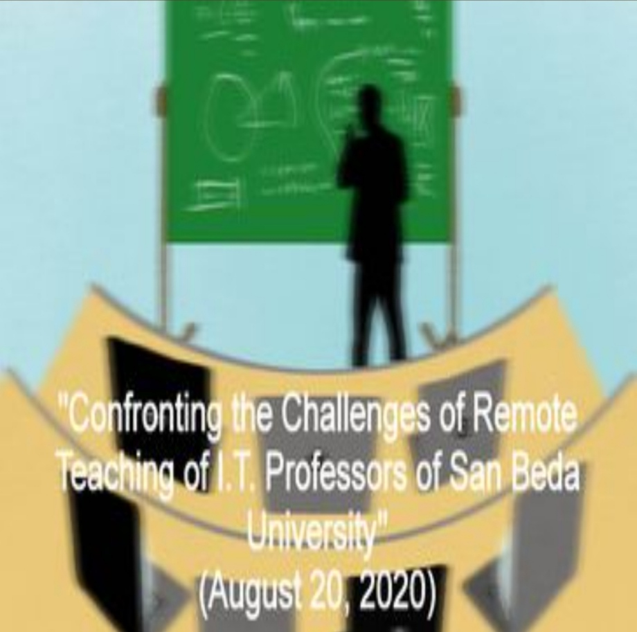

Books Authored:
- Basic Computer Concepts (2012)

- Word Processing(Using MS-Word 2007)(2012)

- Modules in Research Project (Aug 17, 2012)

- Modules in Electronic Spreadsheet (Using MS-Excel 2007 (Sep 6, 2012)

- Modules in Presentation and Database Software (Using MS-PowerPoint 2007 and MS-Access 2007) (Sep 6, 2012)

- Modules in Fundamentals of Programming with Database Theory and Applications(Using C++) (Nov 29, 2012)

- Modules in Digital Logic Circuits (Nov 29, 2012)
- Modules in Code of Ethics for I.C.T. Professionals (Dec 2, 2014)
Researches:
- "Addressing the Digital Divide : The Case of San Beda College Department of Information and Communications Technology" (Apr 21-22, 2016)
- "Impact of Edmodo in the Teaching-Learning Process of I.T. Department Professors at San Beda University" (April 22, 2019)
- "Green Information Technology Practices in the Teaching-Learning Process of I.T. Department Professors" (March 17, 2020 - postponed due to ECQ)

- "Confronting the Challenges of Remote Teaching of I.T. Professors of San Beda University" (August 20, 2020)